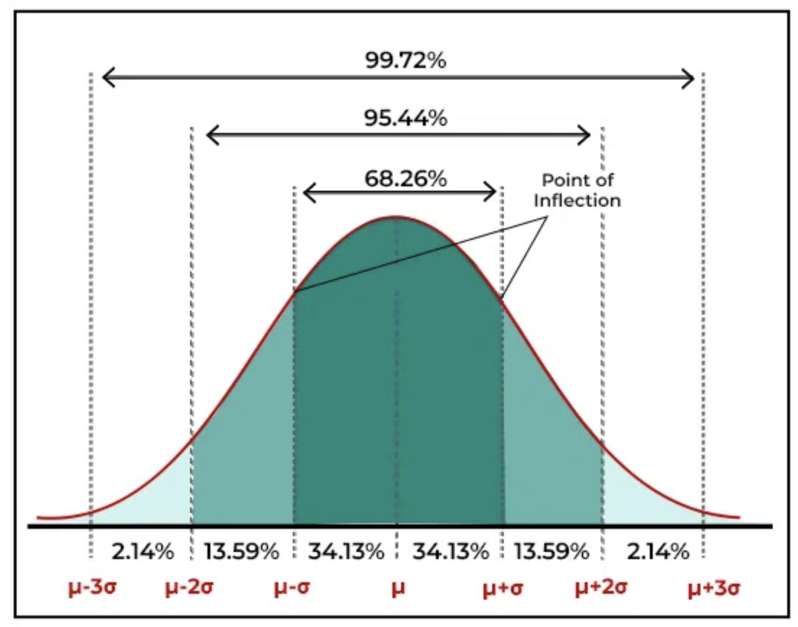

3.1 Samples and Populations
Lesson 3.1, Introductory Statistical Inference
Table of Contents
Sampling
What are Samples and Populations
When we want to analyse a phenomena in political science, we often take samples of the population.
Samples are a portion of all the observations that exist.
Population is all of the observations that exist.
We often use samples, instead of the whole population, because data for the whole population may not exist or be extremely expensive to collect.
For example, if we want to know about the happiness of every person in the UK:
Actually asking all nearly 70 million citizens would be nearly impossible - it would take so much time, effort, and money, plus people are constantly being born or dying.
Instead, we could take a sample of UK citizens, and use that sample to infer something about the entire population.
This is the idea of statistical inference - using a sample to tell us something about the larger population.
Sampling Procedure
Sampling is the process of how we select this portion of observations from all the possible observations in the population.
The way we chose to sample is very important: a “bad” sample could result in the wrong conclusions and inferences made on the population.
Thus, we are very interested in the way we sample.
Done correctly, sampling can be very accurate at inferring the reality in the population, as well as being significantly cheaper and less time-intensive.
The primary method of sampling is Random Sampling. This is because Random Sampling avoids Self Selection Bias.
For example, say that you are interested in the average amount of time students study at your university.
If you chose to set up your survey stand outside the library - there is an issue: The people you survey are the ones who spend time in the library, and those people probably study more than the average student does.
Thus, this positioning creates self-selection bias.
To prevent self selection bias, we need to make sure every observation in the population, has an equal chance of being selected in our sample.
This, in other words, means we need to employ Random Sampling
Random sampling is basically, well, randomly sampling observations from the population, assuming each observation has an equal chance of being selected.
With random sampling, we can create samples that roughly reflect the true population.
- If we draw multiple random samples, and find the averages, we can be even more certain of the true population.
Generally, the larger our samples are, the more confident we are that our samples reflect the population.
Central Limit Theorem
The Central Limit Theorem is key to understanding why statistical inference from sampling works.
Imagine that from a very diverse population of people, we took a random sample.
- What if somehow, maybe through bad luck, we ended up with only the tallest people? What about all the shortest?
The Central Limit Theorem tells us that:
- There is a systematic relationship between the probability that we will pick a particular sample, and how far that sample is from the true population average.
Intuition Behind the Central Limit Theorem
Imagine we are interested in the heights of Dutch people.
We draw a random sample, then record the mean \(\mu\) height of the sample.
Replace all observations back into the population. Then we then draw another sample, the record the mean \(\mu_2\) height of the sample.
Replace all observations back into the population. Then we keep drawing samples, replacing back, until the number of samples \(n\) approaches infinity.
Then, we will have an infinite number of samples \(n=∞\), and an infinite number of sample means from each sample: \(\mu_1, \mu_2, \mu_3,...,\mu_n\)
Now, let us graph all the sample means \(\mu_1, \mu_2, \mu_3,...,\mu_n\) in a frequency distribution. The \(x\) axis will be the value of the mean, and the \(y\) axis is frequency (how many times that specific mean appears).
- This graph is also called a sampling distribution
The Central Limit Theorem states that if each sample’s size is sufficiently large (usually each sample has more than 30 observations), we can assume that the frequency distribution of the different sample means \(\mu_1, \mu_2, ..., \mu_n\) will approximate the shape of a normal distribution, with the centre/mean of the normal distribution being the mean of all the sample means.
The mean of all the sample means \(\mu_1, \mu_2, ..., \mu_n\) is the centre of the normal distribution by the law of large numbers.
We can see a simulator of how the distribution of sample means approximates a normal distribution.
This is true, even if the population distribution is not normally distributed.
Because the frequency distribution of sample means should approximate a normal distribution, we can apply the properties of a normal distribution , as seen in the figure below (see lesson on normal distribution for more details):

We can turn the frequency distribution into a probability distribution:
How? Well we know that the probability of one outcome, is just the number of times that outcome occurs divided by the total amount of observations.
So, we take the frequency \(y\) axis value of one \(x\) outcome, and divide it by the total number of observations.
The above figure does just this, but for sections of \(x\) rather than one \(x\) value.
With our normal distribution telling us probabilities, we can now determine the probability of getting certain sample averages.
For example, if we had taken a ton of random samples, and we were concerned one was full of only tall people, we could place the average height outcome on our normal distribution, and determine the probability of getting an outcome with that average height or higher.
Sampling Distributions are also useful for another reason: Hypothesis testing, the topic of our next lesson.
Properties of Sampling Distributions
There are several properties of the Central Limit Theorem and Sampling Distributions:
The mean of the sampling distribution \(\mu_{\bar{x}}\) is the same as the mean of the population.
- This is because of the law of large numbers - if you take enough samples (remember, as \(n\) approaches \(∞\)), the mean will converge with the real value.
The standard deviation of the sampling distribution, is the standard deviation of the population divided by the square root of the size of each sample: \(\sigma_{\bar{x}} = \frac{\sigma}{\sqrt{n}}\)
Because of the properties of a normal distribution, by knowing the mean of the sampling distribution \(\mu_{\bar{x}}\) and the standard deviation of the sampling distribution \(\sigma_{\bar{x}}\), we can calculate the probability of certain outcomes occurring.
See lesson on normal distribution for more details on Normal Distributions
See lesson on hypothesis testing for an implementation of Central Limit Theorem.